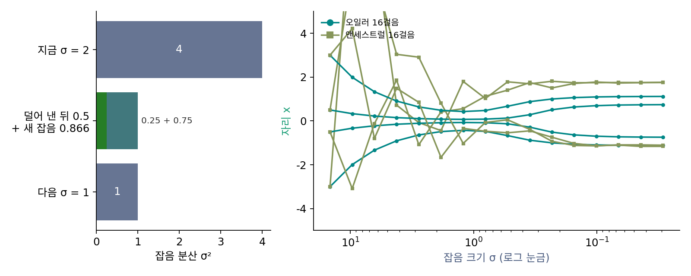

앤세스트럴 샘플링: 덜어 낸 잡음을 새 잡음으로 채우기
오일러 걸음은 한 번 읽은 잡음 ε̂을 그대로 다음 걸음에 물려준다. 그런데 잡음 수준마다 바늘을 읽으며 걷는 길이 하나만 있는 것은 아니었다. 걸음마다 잡음을 조금씩 새로 넣으면서 걸어도, 넣는 잡음만큼 스코어 쪽으로 더 끌어당기면 매 순간의 분포는 같다(역방향 SDE). 실제로 DDPM이 처음 그림을 뽑은 방식이 이쪽이었고, ComfyUI 메뉴의 euler_ancestral 도 이쪽이다. 걸음마다 새 잡음을 얼마나 넣어야 할까? 그리고 그렇게 걸으면 무엇이 달라질까?
역사: DDPM 의 걸음과 「조상」이라는 이름
2020년 호(Jonathan Ho)와 동료들의 DDPM은 학습한 사슬을 그대로 거꾸로 걸어 그림을 뽑았다. 걸음마다 신경망이 내놓은 평균에 정해진 분산의 잡음을 더해 다음 걸음의 그림을 뽑는다. 이듬해 송(Yang Song)과 동료들은 이 방법을 「앤세스트럴 샘플링」이라 부르고, 그 까닭을 「그래프 모델 ∏ pθ(xi−1 ∣ xi)에서 조상 샘플링을 하는 것이기 때문」이라고 적었다. 확률 그래프 모델에서 앞선 변수(조상)를 먼저 뽑고 그 값에 기대 다음 변수를 뽑는 일을 그렇게 부른다. 같은 논문은 이 걸음이 역방향 SDE를 끊어 걷는 여러 방법 가운데 하나일 뿐이라는 것도 보였다.
한 걸음을 둘로 나누기
잡음 크기 σ에서 σ′로 가는 한 걸음을 둘로 나눈다. 먼저 오일러 걸음으로 σ′보다 더 깊은 σdown까지 내려가고, 그다음 모자란 만큼 새 잡음 σupεnew를 섞어 잡음 크기를 σ′로 되돌린다. 잡음은 분산이 더해지므로 σdown² + σup² = σ′²이어야 한다.
숫자로 보자. σ = 2에서 σ′ = 1로 가면 σup² = 1 × (4 − 1)/4 = 0.75, σup = 0.866이고 σdown = 1²/2 = 0.5다. 오일러 걸음이면 읽은 잡음을 크기 1로 남겼을 텐데, 여기서는 0.5만 남기고 나머지 분산 0.75를 새 잡음으로 채운다.
왜 하필 이 크기일까? 원래 그림 x₀를 안다고 하자. 잡음을 차곡차곡 섞어 가는 과정에서 잡음 크기 σ′일 때의 그림과 σ일 때의 그림 x를 둘 다 정해 놓고 그 사이를 보면, 잡음 크기 σ′의 그림은 「x₀에서 x 쪽으로 (σ′/σ)²만큼 간 자리」를 평균으로 하고 분산이 σup²인 가우시안이다. 위 식은 x₀ 자리에 읽은 x̂₀를 넣고 그 가우시안에서 한 점을 뽑는 것이다(x̂₀ + (σ′²/σ²)(x − x̂₀) = x̂₀ + σdownε̂). 잡음을 섞는 과정을 한 칸 거꾸로 되짚되, 「원래 그림이 x̂₀였다면 한 칸 전의 그림은 어디쯤이었을까」를 뽑는 셈이다. 이처럼 걸음마다 읽은 잡음의 일부를 덜어 내고 그만큼 새 잡음을 채우며 걷는 것을 앤세스트럴 샘플링 (걸음마다 덜어 낸 잡음을 새 잡음으로 채우는 걸음 / ancestral sampling)이라 한다.

골짜기는 더 비지만 봉우리는 좁아진다
같은 두 봉우리 데이터에서 걸음 수를 바꿔 견주면 다음과 같다(출발점 2만 개, 잡음 크기를 같은 비율로 줄이며).
| 걸음 수 | 골짜기 비율: 오일러 | 앤세스트럴 | 봉우리 폭: 오일러 | 앤세스트럴 |
|---|---|---|---|---|
| 8 | 5.9% | 3.9% | 0.349 | 0.292 |
| 16 | 2.8% | 1.1% | 0.322 | 0.275 |
| 32 | 1.6% | 0.6% | 0.309 | 0.280 |
| 200 | 0.8% | 0.7% | 0.300 | 0.295 |
봉우리 폭은 |x|의 표준편차이고 데이터에서는 0.302, 골짜기 비율은 데이터에서 0.8%다. 걸음이 적을 때 앤세스트럴은 오일러보다 골짜기를 잘 비운다. 앞 걸음에서 생긴 어긋남이 새 잡음에 섞여 흐려지고, 다음 걸음에서 x̂₀를 다시 읽어 봉우리 쪽으로 끌려가기 때문이다. 대신 봉우리를 데이터보다 좁게 뭉친다. 걸음이 넉넉해지면 두 걸음법 모두 데이터에 다가간다. 같은 분포를 지나는 두 길이니 당연한 결과다.
ML에서: 같은 시드, 다른 그림
ComfyUI 의 get_ancestral_step 은 위 식으로 σdown과 σup을 계산하고, sample_euler_ancestral 은 σdown까지 오일러 걸음을 간 뒤 σup 크기의 잡음을 더한다. 플로우 매칭 모델에는 원래 그림을 줄여 가며 섞는 꼴에 맞춘 다른 식(sample_euler_ancestral_RF)을 쓴다. 그래서 앤세스트럴 샘플러는 시드를 고정해도 걸음 수를 바꾸면 그림이 바뀔 수 있다. 오일러 걸음은 출발 잡음 하나가 도착 그림 하나를 정하지만, 앤세스트럴은 걸음마다 새로 뽑은 잡음이 도착점을 함께 정하기 때문이다.
문제 4. 첫 걸음의 몫 나누기
잡음 크기 14.61에서 7로 가는 앤세스트럴 한 걸음이 있다. (가) σup과 σdown을 구하고 σdown² + σup² = 7²을 확인하라. (나) 데이터가 N(0, 1)이고 x̂₀를 정확히 안다고 하자. 잡음 크기를 같은 비율로 줄이며 4, 8, 16걸음을 앤세스트럴로 걸으면 도착한 점들의 표준편차는 얼마인가? 같은 걸음 수의 오일러와 견주어라.

(가)는 σup² = 49 × (14.61² − 49)/14.61²이라 σup = 6.145, σdown = 49/14.61 = 3.353이에요. 제곱해서 더하면 37.76 + 11.24 = 49예요.

첫 걸음부터 새 잡음이 6이나 되네. (나)는 새 잡음이 퍼뜨리니까 오일러보다 넓게 나오겠죠? 오일러가 좁게 뭉쳤으니까 앤세스트럴이 그걸 메워 줄 것 같아요.

돌려 보고 말해 봐요.

앤세스트럴이 4걸음 0.475, 8걸음 0.684, 16걸음 0.825예요. 오일러는 0.591, 0.801, 0.901이었고요. 오히려 더 좁아요.

새 잡음의 크기를 정할 때, 원래 그림을 무엇이라고 놓고 계산했죠?

읽은 평균 x̂₀를 원래 그림이라고 놓았어요. 원래 그림을 알 때의 분산만 새 잡음으로 채운 거예요. 그런데 잡음이 짙은 앞 걸음에서는 원래 그림이 x̂₀ 둘레에 크게 퍼져 있는데, 그 불확실함만큼의 퍼짐은 아무도 채우지 않아요. 걸음이 클수록 그 몫이 커서 좁게 뭉쳐요.
그래요. 걸음이 잘게 나뉘면 그 빠진 몫이 걸음 크기의 제곱으로 작아져서 사라지고, 걸음이 크면 남아요. 두 봉우리에서 앤세스트럴이 봉우리를 좁게 뭉친 것도 같은 까닭이에요.
확률론에서 전체 분산이 「조건부 분산의 평균 + 조건부 평균의 분산」으로 나뉜다고 배웠는데, 앞쪽 몫 하나를 빼먹은 거네요.
문제 5. 걸음 수를 하나만 바꿨을 뿐인데
데이터가 ±2에 봉우리를 둔 두 봉우리(표준편차 0.5, 반반)다. 같은 출발점 2만 개에서, 걸음마다 넣는 새 잡음도 같은 시드로 뽑으면서 20걸음과 21걸음을 걸었다. (가) 오일러와 앤세스트럴 각각, 두 결과에서 다른 봉우리(부호가 다른 쪽)에 닿은 점의 비율과 두 도착점 사이의 평균 거리를 예상하고 확인하라. (나) 그림 생성 도구에서 마음에 드는 그림을 찾은 뒤 걸음 수만 조금 바꿔 다듬고 싶다면 어느 샘플러가 편한가? (위젯 2의 「문제 5 불러오기」로 확인해 보자.)
시드를 고정했으니 둘 다 거의 같은 그림이 나오겠죠. 걸음 하나 차이니까요.
돌려 보면요?

오일러는 봉우리를 바꾼 점이 하나도 없고, 평균 거리도 0.0045예요. 앤세스트럴은 2.7%가 다른 봉우리로 갔고 평균 거리가 0.122예요. 오일러의 27배예요.
걸음 수가 바뀌면 걸음을 디디는 잡음 크기가 모두 조금씩 달라지잖아. 그러면 같은 시드라도 새 잡음이 섞이는 자리와 크기가 달라져서, 걸음마다 새로 굴린 주사위가 다른 결과를 내는 셈이야. 오일러는 출발점 하나가 길 하나를 정하니까 걸음 수를 바꿔도 같은 길을 조금 다르게 따라갈 뿐이고.

그래서 (나)는요?
오일러처럼 새 잡음을 넣지 않는 샘플러요. 출발 잡음이 곧 그림의 주소가 되니까 걸음 수를 바꿔도 같은 그림의 더 정확한 판이 나와요.
보고서 초안을 고칠 때마다 조교가 새로 랜덤 피드백을 주면, 고친 게 나아졌는지 알 수가 없는 거랑 같네요.